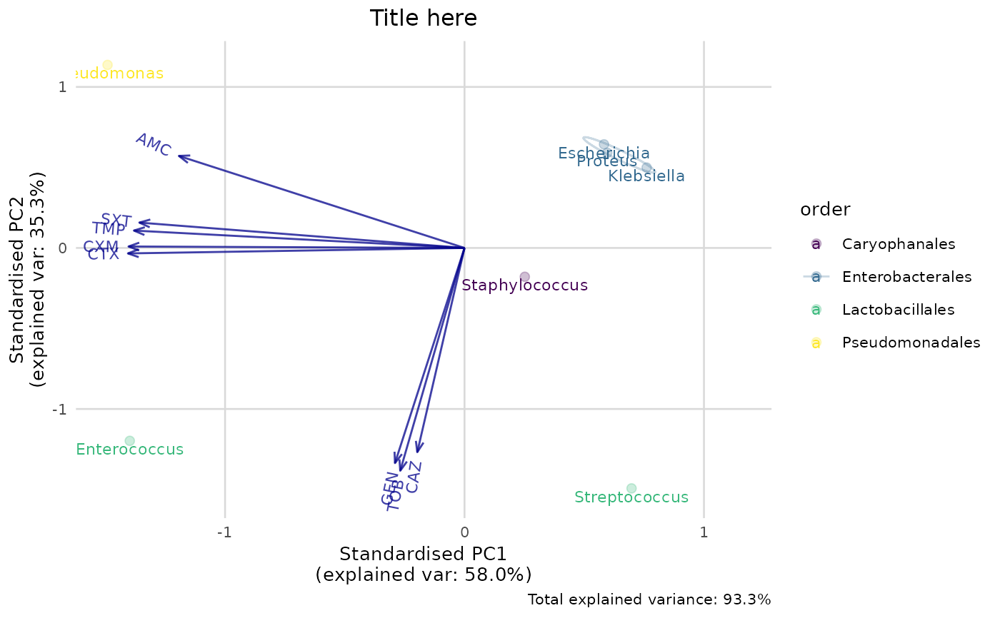
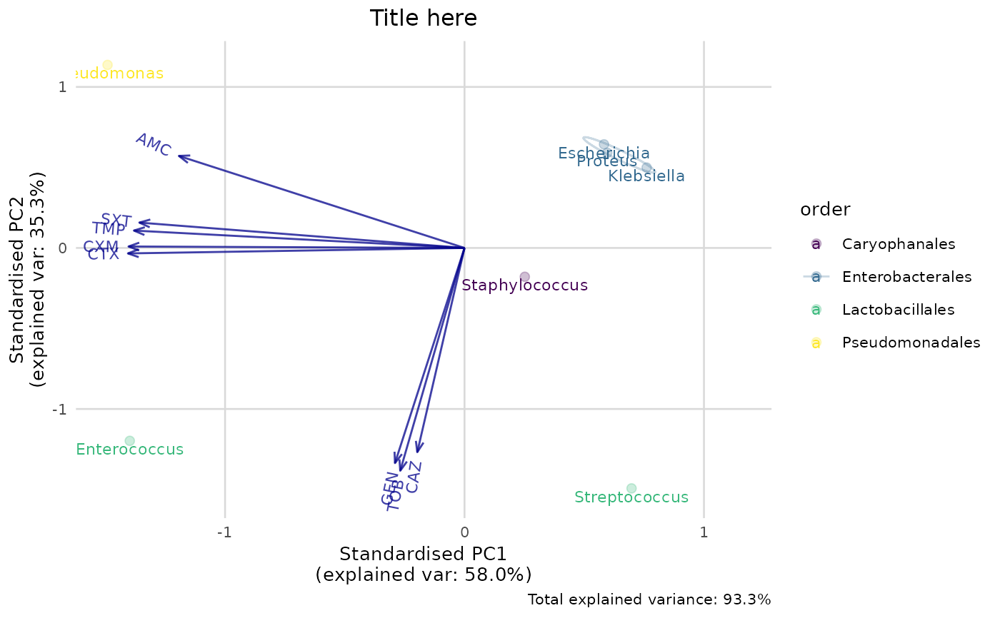

Performs a principal component analysis (PCA) based on a data set with automatic determination for afterwards plotting the groups and labels, and automatic filtering on only suitable (i.e. non-empty and numeric) variables.
Arguments
- x
A data.frame containing numeric columns.
- ...
Columns of
xto be selected for PCA, can be unquoted since it supports quasiquotation.- retx
a logical value indicating whether the rotated variables should be returned.
- center
a logical value indicating whether the variables should be shifted to be zero centered. Alternately, a vector of length equal the number of columns of
xcan be supplied. The value is passed toscale.- scale.
a logical value indicating whether the variables should be scaled to have unit variance before the analysis takes place. The default is
FALSEfor consistency with S, but in general scaling is advisable. Alternatively, a vector of length equal the number of columns ofxcan be supplied. The value is passed toscale.- tol
a value indicating the magnitude below which components should be omitted. (Components are omitted if their standard deviations are less than or equal to
toltimes the standard deviation of the first component.) With the default null setting, no components are omitted (unlessrank.is specified less thanmin(dim(x)).). Other settings fortolcould betol = 0ortol = sqrt(.Machine$double.eps), which would omit essentially constant components.- rank.
optionally, a number specifying the maximal rank, i.e., maximal number of principal components to be used. Can be set as alternative or in addition to
tol, useful notably when the desired rank is considerably smaller than the dimensions of the matrix.
Value
An object of classes pca and prcomp
Details
The pca() function takes a data.frame as input and performs the actual PCA with the R function prcomp().
The result of the pca() function is a prcomp object, with an additional attribute non_numeric_cols which is a vector with the column names of all columns that do not contain numeric values. These are probably the groups and labels, and will be used by ggplot_pca().
Examples
# `example_isolates` is a data set available in the AMR package.
# See ?example_isolates.
# \donttest{
if (require("dplyr")) {
# calculate the resistance per group first
resistance_data <- example_isolates %>%
group_by(
order = mo_order(mo), # group on anything, like order
genus = mo_genus(mo)
) %>% # and genus as we do here;
filter(n() >= 30) %>% # filter on only 30 results per group
summarise_if(is.sir, resistance) # then get resistance of all drugs
# now conduct PCA for certain antimicrobial drugs
pca_result <- resistance_data %>%
pca(AMC, CXM, CTX, CAZ, GEN, TOB, TMP, SXT)
pca_result
summary(pca_result)
# old base R plotting method:
biplot(pca_result)
}
#> Warning: There were 73 warnings in `summarise()`.
#> The first warning was:
#> ℹ In argument: `PEN = (function (..., minimum = 30, as_percent = FALSE,
#> only_all_tested = FALSE) ...`.
#> ℹ In group 5: `order = "Lactobacillales"` `genus = "Enterococcus"`.
#> Caused by warning:
#> ! Introducing NA: only 14 results available for PEN in group: order =
#> "Lactobacillales", genus = "Enterococcus" (`minimum` = 30).
#> ℹ Run `dplyr::last_dplyr_warnings()` to see the 72 remaining warnings.
#> ℹ Columns selected for PCA: "AMC", "CAZ", "CTX", "CXM", "GEN", "SXT",
#> "TMP", and "TOB". Total observations available: 7.
#> Groups (n=4, named as 'order'):
#> [1] "Caryophanales" "Enterobacterales" "Lactobacillales" "Pseudomonadales"
#>
 # new ggplot2 plotting method using this package:
if (require("dplyr") && require("ggplot2")) {
ggplot_pca(pca_result)
}
# new ggplot2 plotting method using this package:
if (require("dplyr") && require("ggplot2")) {
ggplot_pca(pca_result)
}
 if (require("dplyr") && require("ggplot2")) {
ggplot_pca(pca_result) +
scale_colour_viridis_d() +
labs(title = "Title here")
}

# }
if (require("dplyr") && require("ggplot2")) {
ggplot_pca(pca_result) +
scale_colour_viridis_d() +
labs(title = "Title here")
}

# }